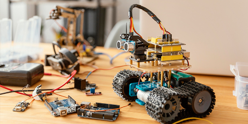
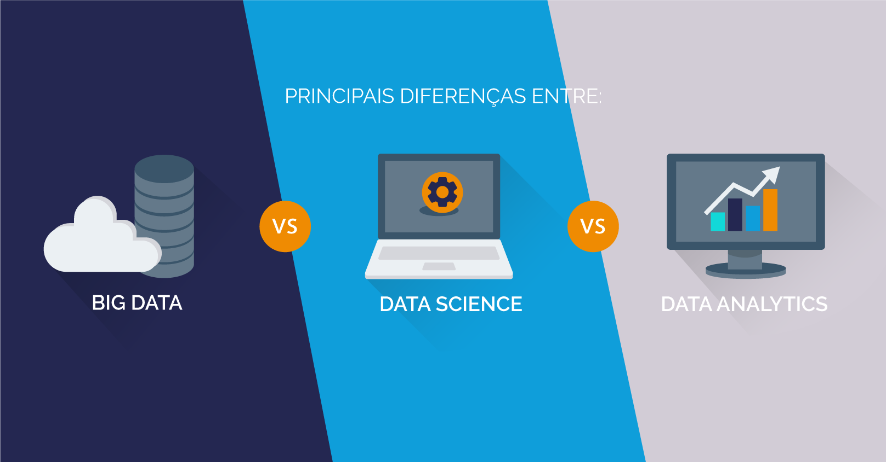

TOP 10 MELHORES PROFISSÕES DE TECNOLOGIA PARA 2023
Postado em 13 de março de 2023.Você está em busca de um emprego ou recolocação profissional em 2023?
A área de tecnologia da informação continua em alta, com muitas ofertas de vagas e bons salários.
Confira a seguir o top 10 melhores profissões de tecnologia para 2023.
1. Segurança da Informação | Hacker Ético
Um Hacker Ético é um profissional especialista em Segurança da Informação, capaz de simular um ataque cibernético no sistema da empresa contratante e identificar vulnerabilidades e falhas.
O profissional deve possuir habilidades em técnicas de penetração de sistemas, redes de computadores e dispositivos computacionais, sistemas operacionais, cloud computing, criptografia.
Com o crescente aumento do ataque de hackers contra empresas, esta é uma das profissões que estará em alta em 2023, com salários que podem chegar a R$ 50 mil reais, segundo a Forbes.
2. Programador Web (Front-end | Back-end | Full Stack)
O mercado de trabalho na área web segue um constante crescimento ao longo dos anos, e não será diferente em 2023.
O profissional pode se especializar em diversas áreas, todas elas igualmente promissoras. O desenvolvedor Web Front-end é o responsável pela aparência do site, sua interface e usabilidade. Já o Back-end cuida dos códigos e toda a implementação para que o sistema funcione corretamente.
Existe ainda o profissional que cuida sozinho do front e back-end. Ele é o desenvolvedor Full Stack.
3. Desenvolvedor de Jogos Digitais

Com a pandemia da Covid-19 e o isolamento que vivenciamos, a indústria de games sofreu um grande aumento em suas vendas, e mesmo com o passar do tempo, esse crescimento não desacelerou.
O profissional desenvolvedor de jogos digitais está sendo bastante requisitado por empresas de games, com ótimos salários.
O profissional deve dominar linguagens de programação como C, C#, Python, Unity e ainda ter habilidades em plataformas 2D e 3D.
4. Desenvolvedor Mobile
Esta é uma profissão que não tem tendência a desacelerar tão cedo, pois cada vez mais utilizamos os nossos dispositivos móveis para diversas atividades ao longo do dia.
O profissional mobile encontra diversas oportunidades de trabalho em 2023, seja no desenvolvimento para Android, IOS ou Híbrido.
Os salários são altos e há uma escassez de mão de obra. Portanto, vale a pena se especializar nesta área que apresenta grandes chances de crescimento profissional.
5. Arquiteto de Redes
O arquiteto de redes é responsável por projetar, testar, instalar e avaliar sistemas de comunicação de dados como redes locais (LANs), redes de longa distância (WANs) e intranets.
O profissional precisa ter capacidade de trabalho em equipe.
Há muitas vagas abertas para 2023 em setores como serviços de TI, telecomunicações e serviços financeiros. A média salarial para um profissional experiente está em torno de R$ 18 mil, segundo a Glassdorr.
6. Robótica
Outra profissão acelerada pela pandemia, a robótica segue em alta em 2023, oferecendo diversas oportunidades em setores como veículos elétricos, no comércio eletrônico e na automação inteligente em diversos ambientes como construção, laboratórios, restaurantes e varejo.
Esta ainda é uma profissão relativamente recente, portanto há muita procura e pouca mão de obra. Para suprir esta necessidade, muitas escolas já incluem a robótica em seus currículos.
Vale a pena investir neste conhecimento e ingressar nesta área em 2023.
7. Administrador de Banco de Dados (DBA)
O profissional DBA é responsável pela instalação, administração e suporte de Sistemas de Gerenciamento de Banco de Dados. Deve garantir a segurança, disponibilidade e eficiência da base de dados.
São necessárias habilidades organizacionais, técnicas e interpessoais, além da compreensão de aspectos técnicos. A média salarial gira em torno de R$ 8 mil reais, segundo a Glassdoor.
8. Especialista em Inteligência Artificial (IA)

Uma profissão que continuará em alta por muitos anos, o especialista em IA é responsável pelo planejamento e implementação de projetos, trabalhando diretamente na extração e uso de dados para orientar a tomada de decisão.
O profissional pode trabalhar em diversas áreas, tais como Machine Learning, Big Data ou Analista de Negócios. Ele deve ter conhecimentos sólidos em matemática e estatística, além de linguagens de programação como R ou Python.
9. Especialista em DevOps
Este profissional integra equipes de desenvolvimento de software nas áreas de desenvolvimento e operações, promovendo a padronização dos processos e uma rápida liberação de atualizações do produto.
É essencial o conhecimento em metodologias ágeis e ferramentas de produtividade, além de facilidade para lidar com mudanças. O salário médio deste especialista gira em torno de R$ 8 mil.
10. Cientista de Dados (Data scientist)
A Ciência de Dados é mais uma profissão que está em alta, com muitas vagas e poucos profissionais qualificados. Por isso, os salário são altos, com chances de rápido crescimento, e os especialistas são muito disputados por grandes empresas.
O cientista de dados realiza o estudo a partir de dados brutos com o intuito de realizar previsões para auxiliar empresas em busca das melhores decisões. Este profissional deve ter perfil analítico, raciocínio lógico, pensamento crítico, análise de riscos e capacidade de solucionar problemas.
Postagens recentes
TOP 10 MELHORES PROFISSÕES DE TECNOLOGIA PARA 2023
Você está em busca de um emprego ou recolocação profissional em 2023? A área de tecnologia da informação continua em alta, com muitas ofertas de vagas e bons salários.
Confira a seguir o top 10 melhores profissões de tecnologia para 2023.
Leia maisGESTÃO DO TEMPO E TECNOLOGIA
Tempo é o nosso recurso mais precioso, entretanto, é comum estarmos atolados pelo excesso de demandas e informações provenientes de emails, mensagens, notícias, entre outros canais.
Achar um equilíbrio para uma melhor produtividade se torna importantíssimo. Uma forma de equalizar isso é buscar uma gestão do tempo utilizando de recursos tecnológicos.
Leia mais